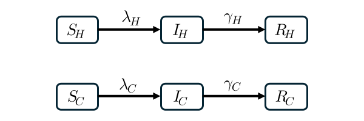
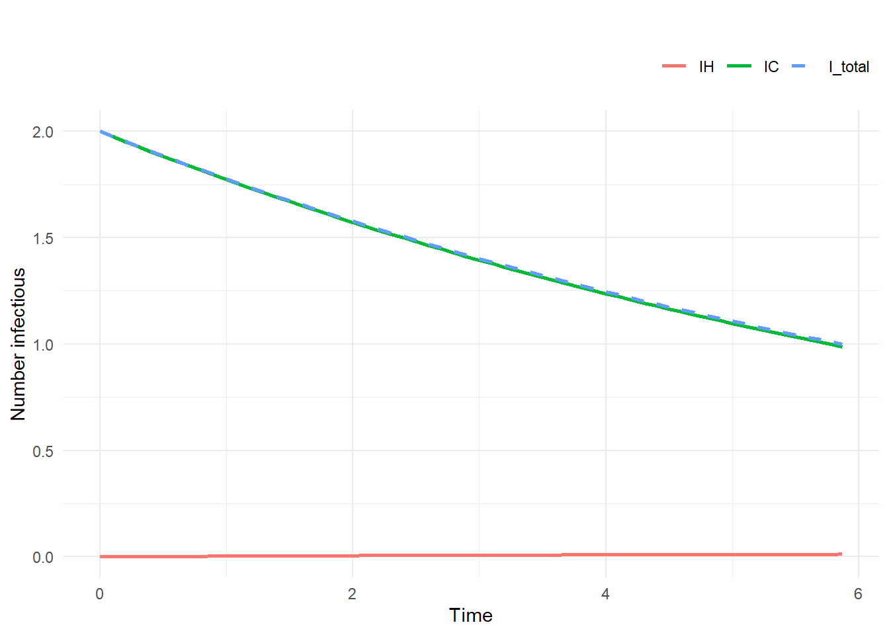
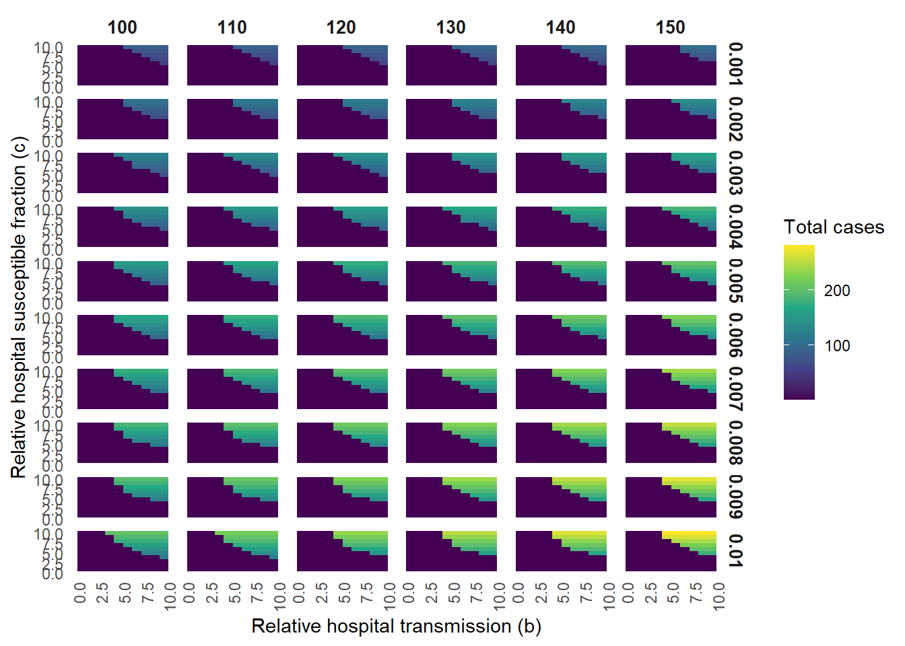
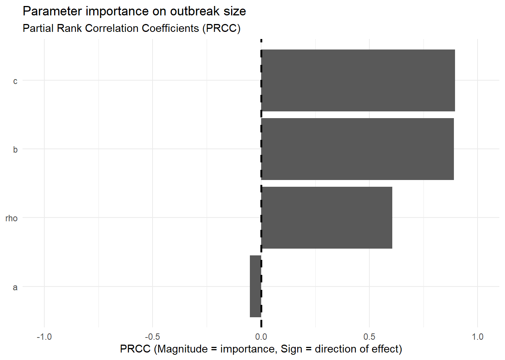
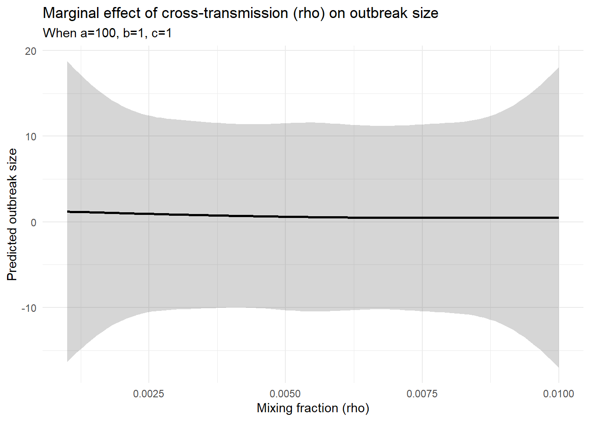

Code
library(tidyverse)
library(deSolve)
The model represents 2 environments: hospital (\(H\)) and community (\(C\)), each with \(S\), \(I\), and \(R\) compartments
Movement between environments is modelled implicitly through the force of infection: infectious individuals in one environment contribute to transmission in the other environment through a parameter \(\rho\)
This allows constant population sizes in hospital and community, while also represents cross-environment infection
\[\begin{aligned} \frac{dS_H}{dt} &= -\lambda_H S_H, \\ \frac{dI_H}{dt} &= \lambda_H S_H - \gamma_H I_H, \\ \frac{dR_H}{dt} &= \gamma_H I_H, \end{aligned} \qquad \begin{aligned} \frac{dS_C}{dt} &= -\lambda_C S_C, \\ \frac{dI_C}{dt} &= \lambda_C S_C - \gamma_C I_C, \\ \frac{dR_C}{dt} &= \gamma_C I_C. \end{aligned}\]
with
\[\lambda_H = \beta_H \left( \frac{I_H}{N_H} + \rho \frac{I_C}{N_C} \right)\] \[\lambda_C = \beta_C \left( \frac{I_C}{N_C} + \rho \frac{I_H}{N_H} \right)\]
with \(N_H\) and \(N_C\) are the total population
\[N_H = S_H + I_H + R_H, \qquad N_C = S_C + I_C + R_C\]
The community size is larger than hospital size
\[N_C = a \cdot N_H\]
Effective contact rate in the hospital is larger than in the community
\[\beta_H = b \cdot \beta_C\]
The proportion of initial susceptibility in the hospital is larger than in the community
\[s_{H0} = c \cdot s_{C0}\]
# ------------------------------------------------------------
# 1) TWO-ENVIRONMENT SIR MODEL
# ------------------------------------------------------------
sir_2env <- function(time, y, parms) {
with(as.list(c(y, parms)), {
NH <- SH + IH + RH
NC <- SC + IC + RC
lambda_H <- beta_H * (IH / NH + rho * IC / NC)
lambda_C <- beta_C * (IC / NC + rho * IH / NH)
dSH <- -lambda_H * SH
dIH <- lambda_H * SH - gamma_H * IH
dRH <- gamma_H * IH
dSC <- -lambda_C * SC
dIC <- lambda_C * SC - gamma_C * IC
dRC <- gamma_C * IC
list(c(dSH, dIH, dRH, dSC, dIC, dRC))
})
}
# ------------------------------------------------------------
# 2) STOPPING RULE
# ------------------------------------------------------------
make_stop_condition <- function(threshold = 1) {
function(time, y, parms) {
# Force the solver to ignore the threshold for the first 1 day
if (time < 1) return(1)
as.numeric(y["IH"] + y["IC"] - threshold)
}
}
no_change_event <- function(time, y, parms) {
y
}
# ------------------------------------------------------------
# 3) ONE-SIMULATION WRAPPER
# ------------------------------------------------------------
run_one_sim <- function(a, b, c, rho,
NH = 100,
R0_C = 18,
infectious_period = 7,
infectious_period_H = infectious_period,
infectious_period_C = infectious_period,
sC_prop = 0.05,
IH0 = 0,
IC0 = 1,
max_time = 365,
dt = 0.1,
stop_threshold = 1,
method = "lsoda",
use_root_stop = TRUE,
return_trajectory = TRUE) {
# Separate recovery rates
# For now they are equal by default because both periods default to infectious_period
gamma_H <- 1 / infectious_period_H
gamma_C <- 1 / infectious_period_C
# Transmission rates
# Community R0 is specified directly
beta_C <- R0_C * gamma_C
# Hospital transmission is scaled relative to community
beta_H <- b * beta_C
# Population sizes
NC <- a * NH
# Initial susceptible fraction in hospital
# SH0/NH = c * (SC0/NC)
sH_prop <- c * sC_prop
if (sC_prop < 0 || sC_prop > 1 || sH_prop < 0 || sH_prop >= 1) {
out_row <- data.frame(
a = a, b = b, c = c, rho = rho,
NH = NH, NC = NC,
R0_C = R0_C,
infectious_period_H = infectious_period_H,
infectious_period_C = infectious_period_C,
beta_H = beta_H, beta_C = beta_C,
gamma_H = gamma_H, gamma_C = gamma_C,
sC_prop = sC_prop, sH_prop = sH_prop,
outbreak_size = NA_real_,
attack_rate_total = NA_real_,
attack_rate_H = NA_real_,
attack_rate_C = NA_real_,
peak_I_total = NA_real_,
peak_IH = NA_real_,
peak_IC = NA_real_,
time_to_peak_total = NA_real_,
end_time = NA_real_,
status = "infeasible: invalid susceptible proportions"
)
if (return_trajectory) return(list(summary = out_row, trajectory = NULL))
return(out_row)
}
SC0 <- sC_prop * NC
SH0 <- sH_prop * NH
RC0 <- NC - SC0 - IC0
RH0 <- NH - SH0 - IH0
if (any(c(SH0, IH0, RH0, SC0, IC0, RC0) < 0)) {
out_row <- data.frame(
a = a, b = b, c = c, rho = rho,
NH = NH, NC = NC,
R0_C = R0_C,
infectious_period_H = infectious_period_H,
infectious_period_C = infectious_period_C,
beta_H = beta_H, beta_C = beta_C,
gamma_H = gamma_H, gamma_C = gamma_C,
sC_prop = sC_prop, sH_prop = sH_prop,
outbreak_size = NA_real_,
attack_rate_total = NA_real_,
attack_rate_H = NA_real_,
attack_rate_C = NA_real_,
peak_I_total = NA_real_,
peak_IH = NA_real_,
peak_IC = NA_real_,
time_to_peak_total = NA_real_,
end_time = NA_real_,
status = "infeasible: negative initial compartment"
)
if (return_trajectory) return(list(summary = out_row, trajectory = NULL))
return(out_row)
}
y0 <- c(
SH = SH0, IH = IH0, RH = RH0,
SC = SC0, IC = IC0, RC = RC0
)
parms <- c(
beta_H = beta_H,
beta_C = beta_C,
gamma_H = gamma_H,
gamma_C = gamma_C,
rho = rho
)
times <- seq(0, max_time, by = dt)
use_root_stop <- isTRUE(use_root_stop) && method %in% c("lsoda", "lsode", "lsodes", "radau")
if (use_root_stop) {
out <- ode(
y = y0,
times = times,
func = sir_2env,
parms = parms,
rootfun = make_stop_condition(stop_threshold),
events = list(func = no_change_event, root = TRUE, terminalroot = 1),
method = method
)
out <- as.data.frame(out)
status <- if (tail(out$time, 1) < max_time) "stopped" else "max_time_reached"
} else {
out <- ode(
y = y0,
times = times,
func = sir_2env,
parms = parms,
method = method
)
out <- as.data.frame(out)
idx_stop <- which((out$IH + out$IC) < stop_threshold)
if (length(idx_stop) > 0) {
out <- out[1:min(idx_stop), , drop = FALSE]
status <- "stopped_posthoc"
} else {
status <- "max_time_reached"
}
}
out$NH <- out$SH + out$IH + out$RH
out$NC <- out$SC + out$IC + out$RC
out$I_total <- out$IH + out$IC
last <- out[nrow(out), ]
new_inf_H <- SH0 - last$SH
new_inf_C <- SC0 - last$SC
outbreak_size <- new_inf_H + new_inf_C + IH0 + IC0
summary_row <- data.frame(
a = a, b = b, c = c, rho = rho,
NH = NH, NC = NC,
R0_C = R0_C,
infectious_period_H = infectious_period_H,
infectious_period_C = infectious_period_C,
beta_H = beta_H, beta_C = beta_C,
gamma_H = gamma_H, gamma_C = gamma_C,
sC_prop = sC_prop, sH_prop = sH_prop,
outbreak_size = outbreak_size,
attack_rate_total = outbreak_size / (NH + NC),
attack_rate_H = (new_inf_H + IH0) / NH,
attack_rate_C = (new_inf_C + IC0) / NC,
peak_I_total = max(out$I_total),
peak_IH = max(out$IH),
peak_IC = max(out$IC),
time_to_peak_total = out$time[which.max(out$I_total)][1],
end_time = last$time,
status = status
)
if (return_trajectory) return(list(summary = summary_row, trajectory = out))
summary_row
}
# For sensitivity analysis
get_outbreak_size <- function(a, b, c, rho,
NH = 5000,
R0_C = 18,
infectious_period = 7,
infectious_period_H = infectious_period,
infectious_period_C = infectious_period,
sC_prop = 0.05,
IH0 = 0,
IC0 = 1,
max_time = 365,
dt = 0.1,
stop_threshold = 1,
method = "lsoda") {
gamma_H <- 1 / infectious_period_H
gamma_C <- 1 / infectious_period_C
beta_C <- R0_C * gamma_C
beta_H <- b * beta_C
NC <- a * NH
sH_prop <- c * sC_prop
# Fast fail for invalid proportions
if (sC_prop < 0 || sC_prop > 1 || sH_prop < 0 || sH_prop >= 1) {
return(NA_real_)
}
SC0 <- sC_prop * NC
SH0 <- sH_prop * NH
RC0 <- NC - SC0 - IC0
RH0 <- NH - SH0 - IH0
# Fast fail for negative compartments
if (any(c(SH0, IH0, RH0, SC0, IC0, RC0) < 0)) {
return(NA_real_)
}
y0 <- c(
SH = SH0, IH = IH0, RH = RH0,
SC = SC0, IC = IC0, RC = RC0
)
parms <- c(
beta_H = beta_H,
beta_C = beta_C,
gamma_H = gamma_H,
gamma_C = gamma_C,
rho = rho
)
times <- seq(0, max_time, by = dt)
out <- ode(
y = y0,
times = times,
func = sir_2env,
parms = parms,
rootfun = make_stop_condition(stop_threshold),
events = list(func = no_change_event, root = TRUE, terminalroot = 1),
method = method
)
# Extract the final row directly from the matrix output
last_row <- out[nrow(out), ]
new_inf_H <- SH0 - last_row["SH"]
new_inf_C <- SC0 - last_row["SC"]
# Strip names so pmap_dbl doesn't throw a warning
unname(new_inf_H + new_inf_C + IH0 + IC0)
}plot_sim <- function(out, main_title = "") {
# Reshape from wide to long for ggplot
plot_data <- out |>
select(time, IH, IC, I_total) |>
pivot_longer(
cols = -time,
names_to = "compartment",
values_to = "count"
) |>
# Lock the factor levels so the legend stays in a logical order
mutate(
compartment = factor(compartment, levels = c("IH", "IC", "I_total"))
)
ggplot(plot_data, aes(x = time, y = count, color = compartment, linetype = compartment)) +
geom_line(linewidth = 1) +
# Match your original line types: solid for specific, dashed for total
scale_linetype_manual(values = c("IH" = "solid", "IC" = "solid", "I_total" = "dashed")) +
labs(
title = main_title,
x = "Time",
y = "Number infectious",
color = NULL,
linetype = NULL
) +
theme_minimal() +
theme(
legend.position = "top",
legend.justification = "right"
)
}# 1. Run a fast-burning simulation
# High R0 ensures the outbreak peaks and dies out quickly
test_sim <- run_one_sim(
a = 10, b = 2, c = 1, rho = 0.1,
IC0 = 2,
R0_C = 8,
infectious_period_H = 5,
infectious_period_C = 5,
max_time = 365,
stop_threshold = 1,
use_root_stop = TRUE,
return_trajectory = TRUE
)
# 2. Extract the data
traj <- test_sim$trajectory
summary_data <- test_sim$summary
plot_sim(traj)
rho = 0Outbreak in community won’t affect hospital
rho = 0.001The model is run with \(N_H = 5000\), using measles \(R_{0C} = 18\) in the community. Infectious period is set as 7 days (\(\gamma_C = \frac{1}{7}\) therefore \(\beta_C = R_{0C} \cdot \gamma_C = \frac{18}{7}\). Assuming infectious period of hospital-infected cases is the same as community-infected (\(\gamma_H = \gamma_C\)). Susceptibility fraction in the community is \(s_{C0} = 0.05\) which is 95% measles vaccination coverage. The model stops (outbreak ends) when \(I_H + I_C \leq 1\).
Sensitivity analysis is run on a grid of:
# grid <- expand_grid(
# a = seq(100, 150, 10),
# b = 1:10,
# c = 1:10,
# rho = seq(0.001, 0.01, 0.001)
# )
#
# # Run the simulations
# results <- grid |>
# mutate(
# outbreak_size = pmap_dbl(
# list(a = a, b = b, c = c, rho = rho),
# get_outbreak_size
# )
# )
# saveRDS(results, "data/sens.rds")
results <- readRDS("data/sens.rds")
# Assuming 'results' is your raw grid output
plot_data <- results |>
filter(!is.na(outbreak_size)) |>
mutate(
a_label = a,
rho_label = rho
)
# 1. Remove factor() from x and y
# 2. Swap geom_tile for geom_raster
ggplot(plot_data, aes(x = b, y = c, fill = outbreak_size)) +
geom_raster() +
# Use a perceptually uniform colour scale (viridis/magma) for better contrast
scale_fill_viridis_c(option = "viridis", na.value = "transparent") +
facet_grid(rho_label ~ a_label) +
labs(
x = "Relative hospital transmission (b)",
y = "Relative hospital susceptible fraction (c)",
fill = "Total cases"
) +
theme_minimal() +
theme(
panel.grid = element_blank(),
strip.text = element_text(face = "bold", size = 10),
# Angle x-axis text slightly if you still have overlapping numbers
axis.text.x = element_text(angle = 90, hjust = 1)
)
Use partial rank correlation coefficient (PRCC):
library(sensitivity)
# 1. Isolate inputs and outputs from your successful runs
model_data <- results |>
filter(!is.na(outbreak_size))
params <- model_data |> select(a, b, c, rho)
output <- model_data$outbreak_size
# 2. Calculate Partial Rank Correlation Coefficients
# rank = TRUE converts the raw values to ranks before calculating correlations
prcc_res <- pcc(X = params, y = output, rank = TRUE)
# 3. Format the output for ggplot2
prcc_plot_data <- prcc_res$PRCC |>
rownames_to_column(var = "parameter") |>
rename(prcc_value = original) |>
# Reorder factors by absolute importance to create a neat tornado shape
mutate(parameter = fct_reorder(parameter, abs(prcc_value)))
# 4. Plot the tornado chart
ggplot(prcc_plot_data, aes(x = prcc_value, y = parameter)) +
geom_col() +
geom_vline(xintercept = 0, linetype = "dashed", linewidth = 1) +
# PRCC is bounded strictly between -1 and 1
scale_x_continuous(limits = c(-1, 1)) +
labs(
title = "Parameter importance on outbreak size",
subtitle = "Partial Rank Correlation Coefficients (PRCC)",
x = "PRCC (Magnitude = importance, Sign = direction of effect)",
y = NULL
) +
theme_minimal()
# 1. Clean the data
# The GAM cannot handle NA values from infeasible ODE runs
model_data <- results |>
filter(!is.na(outbreak_size))
# 2. Fit the tensor product GAM
# We use family = gaussian(link = "identity") because the data is deterministic continuous.
# k sets the basis dimension per parameter. Keep it low (e.g., 4 or 5) initially
# to avoid an explosion in degrees of freedom (total df = k^4).
# surrogate_gam <- gam(
# outbreak_size ~ te(a, b, c, rho, k = 5),
# data = model_data,
# family = gaussian(link = "identity"),
# method = "REML" # REML is standard for penalised smoothers to prevent overfitting
# )
# saveRDS(surrogate_gam, "data/surrogate_gam.rds")
surrogate_gam <- readRDS("data/surrogate_gam.rds")
# 3. Check the mechanical fit
# This will output the R-squared (deviance explained).
# For a deterministic surrogate, you want this > 95%.
summary(surrogate_gam)
Family: gaussian
Link function: identity
Formula:
outbreak_size ~ te(a, b, c, rho, k = 5)
Parametric coefficients:
Estimate Std. Error t value Pr(>|t|)
(Intercept) 38.5277 0.2544 151.4 <2e-16 ***
---
Signif. codes: 0 '***' 0.001 '**' 0.01 '*' 0.05 '.' 0.1 ' ' 1
Approximate significance of smooth terms:
edf Ref.df F p-value
te(a,b,c,rho) 159.2 184.4 394.3 <2e-16 ***
---
Signif. codes: 0 '***' 0.001 '**' 0.01 '*' 0.05 '.' 0.1 ' ' 1
R-sq.(adj) = 0.924 Deviance explained = 92.6%
-REML = 26611 Scale est. = 388.44 n = 6000# Create a prediction sequence for 'rho'
pred_grid <- tibble(
rho = seq(min(model_data$rho), max(model_data$rho), length.out = 100),
a = 100,
b = 1,
c = 1
)
# Generate predictions and standard errors
predictions <- bind_cols(
pred_grid,
as_tibble(predict(surrogate_gam, newdata = pred_grid, se.fit = TRUE))
) |>
mutate(
lower = fit - (1.96 * se.fit),
upper = fit + (1.96 * se.fit)
)
# Plot the marginal effect of rho
ggplot(predictions, aes(x = rho, y = fit)) +
geom_ribbon(aes(ymin = lower, ymax = upper), alpha = 0.2) +
geom_line(linewidth = 1) +
labs(
title = "Marginal effect of cross-transmission (rho) on outbreak size",
subtitle = "When a=100, b=1, c=1",
x = "Mixing fraction (rho)",
y = "Predicted outbreak size"
) +
theme_minimal()